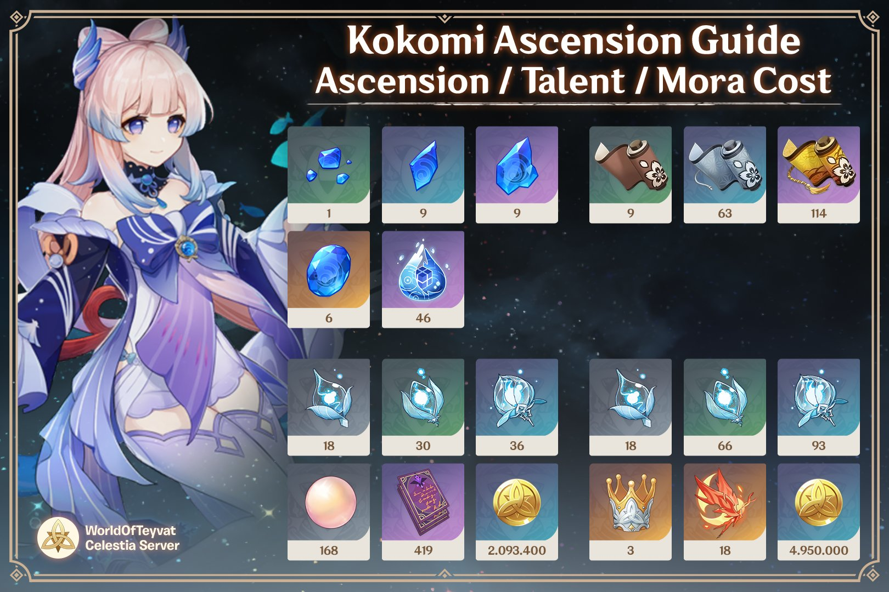

Sangonomiya Kokomi: Mats
As all characters in Genshin Impact need to be leveled up, upgraded and built, Kokomi is no exception. In order to level up and ascend Kokomi, she needs certain materials, below is an Ascension Guide for her Ascension, Talents, and mora Cost made by @WorldOfTeyvat on Twitter !
